- 순서 데이터는
[B, T, F](개수 · 시점 · 특징). 모든 시점에 같은 가중치를 써서 길이가 달라도 같은 모델로 읽고, 길이를 맞추려 채운 Padding은 계산에서 꼭 뺀다(lengths · Mask). - RNN → LSTM → Transformer는 "순서를 더 잘 읽기"의 발전: 메모 한 장(h) → 곱하지 않고 더하는 기억 통로(c) → 모든 위치를 한 번에 직접 보기(Attention, 대신 비용 T²).
- Autoencoder는 목적이 다른 갈래: 미래가 아니라 입력 자신을 좁은 통로로 되살리고, 잘 못 되살리면 "이상 후보". 예측·재구성 결과는 따로 기록해요.
본문에는 핵심 코드 한두 줄만 남겼어요.
📦 필요한 패키지
| 패키지 (pip 이름) | 뭐 하는 애? | 코드에서 |
|---|---|---|
torch | RNN·LSTM·Transformer 층, Padding 도구, 손실 함수, DataLoader 전부 (Day9부터 설치됨) | import torch, from torch import nn, from torch.nn.utils.rnn import pad_sequence |
matplotlib (선택) | loss 곡선, 예측 vs 실제, Mask·Latent 그림 | import matplotlib.pyplot as plt |
🔧 확인
python -c "import torch; print(torch.__version__); print('CUDA:', torch.cuda.is_available())"nn.RNN, nn.LSTM, nn.MultiheadAttention, pad_sequence …)는 전부 torch 안에 들어 있어서 따로 설치할 게 없어요. 정상 설치된 환경은 그대로 두고, 기본 학습은 CPU로, GPU 비교는 GPU가 있을 때만 해요.이거 어디에 써?
Day11의 이미지는 "한 장" 데이터였죠. 오늘은 순서가 의미를 가지는 데이터예요(센서·문장·로그·오디오). 같은 단어라도 순서를 바꾸면 뜻이 달라져요(“woman ate raccoon” vs “raccoon ate woman”). 그래서 시계열은 순서를 마구 섞으면 같은 문제가 아니에요.
| 입출력 구조 | 하는 일 | 예 |
|---|---|---|
| Many-to-one | 전체 순서를 읽고 클래스·값 하나 | 문장 감성 분류 |
| Many-to-many | 각 시점마다 태그·상태·예측 | 시점별 상태 표시 |
| Next-step | 과거 Window로 다음 시점 값 | 과거 12개 → 다음 1개 |
| Encoder–Decoder | 입력 순서를 다른 길이의 출력 순서로 | 번역 |
① 순서 데이터 [B, T, F] · Padding · Mask · Window
| 축 | 뜻 | 예 (오늘 LSTM 예측) |
|---|---|---|
| B · Batch | Window(순서) 개수 | B개 |
| T · Time | 시점 수 (길이) | T=12, 과거 12개 관측 |
| F · Feature | 한 시점에 동시에 관측한 특성 수 | F=1, 시점마다 값 1개 |
순서마다 길이가 달라요(4, 2, 5 …). 한 묶음(Tensor)으로 만들려면 가장 긴 길이에 맞춰 0을 채워야 해요. 이게 Padding. 대신 "진짜 길이(lengths)"나 "어디가 채운 칸인지(Mask)"를 함께 들고 다녀요. Padding을 쓰면 T는 batch 안의 최대 길이가 돼요.
순서 [3, 1, 4] 를 길이 5에 맞춤 → [3, 1, 4, 0, 0]
✕ Padding까지 평균: (3+1+4+0+0) ÷ 5 = 1.6 ← 틀림
○ 실제 길이로 평균: (3+1+4) ÷ 3 = 2.67nn.RNN(input_size, hidden_size)에는 길이 T를 정하는 인자가 아예 없어요. (Day11 Conv가 "모든 위치에 같은 Kernel"이었던 것과 같은 생각이에요.)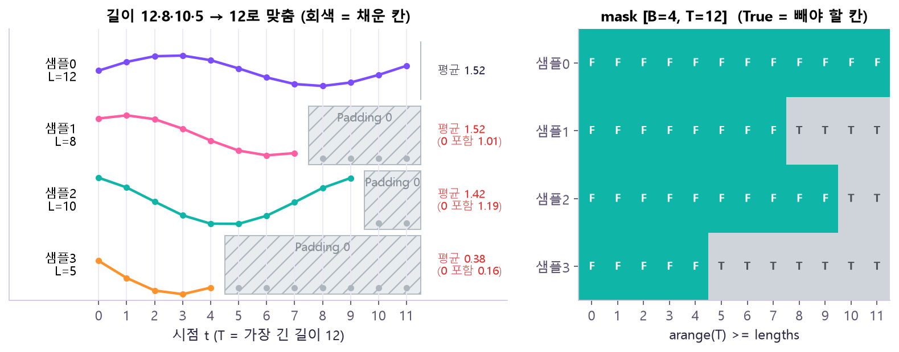
pad_sequence() 명령어 사전에서 자세히 →mask = torch.arange(6)[None, :] >= lengths[:, None] # [4, 6], True = Padding 칸
padded = pad_sequence(seqs, batch_first=True) # → [3, 5, 3] = [B, T, F]unfold() 명령어 사전에서 자세히 →window = train_s.unfold(0, 13, 1) # [창 개수, 13] = 과거 12 + 정답 1
x = window[:, :12].unsqueeze(-1) # [N, 12, 1] ← F=1 축 추가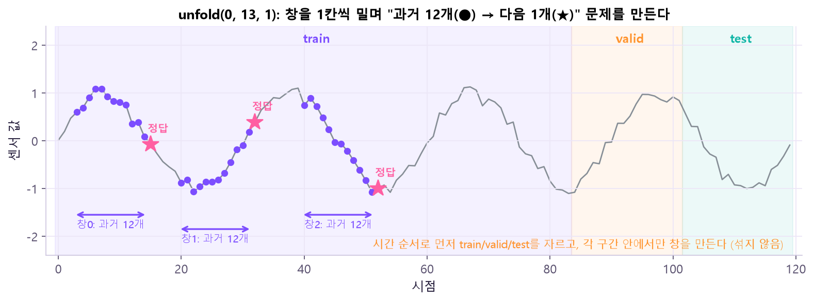
unfold(0, 13, 1)은 이 13칸짜리 창을 1칸씩 밀며 전부 만들어요. 배경색은 시간 순서로 먼저 자른 train/valid/test 구간이에요. 🤔 왜 먼저 자르고 창을 만들어? 창은 서로 12칸씩 겹쳐요. 섞어서 나누면 train 창의 "과거 12개" 안에 valid 창의 정답(별)이 그대로 들어가 버려요. 미래를 미리 본 모델은 시험 점수만 좋고 실전에선 틀려요.pack_padded_sequence() 명령어 사전에서 자세히 →packed = pack_padded_sequence(padded, lengths, batch_first=True, enforce_sorted=False)
out_packed, h_n = rnn(packed) # h_n = 샘플마다 '실제' 마지막 시점② RNN — 메모 한 장으로 과거를 요약
RNN은 글을 읽으며 적는 메모 한 장이에요. 칸이 정해져 있어서 중요한 것만 적어요. 시점마다 "지금 입력 xt"와 "직전 메모 ht−1"를 섞어 새 메모 ht를 만들어요. 같은 Cell을 시간축에 반복 적용하는 거예요.
마지막 요약
h_t = tanh( W_x · x_t + W_h · h_(t-1) + b )
└ 지금 입력 ┘ └ 직전 메모 ┘ ← 모든 시점에 같은 W_x, W_houtput(모든 시점), 마지막 h₄가 h_n이에요. 🤔 왜 이렇게 생겼어? 가중치를 한 벌만 두고 반복하니 길이가 4든 100이든 같은 모델로 읽을 수 있어요. 대신 x₁의 정보가 h₄까지 가려면 상자 3개를 차례로 통과해야 해요 → 느리고(병렬 불가), 멀수록 흐려져요(③의 문제).| 결과 | 뜻 | shape (batch_first=True) |
|---|---|---|
output | 마지막 층의 모든 시점 출력 | [B, T, D×H] |
h_n | 모든 층·방향의 마지막 상태 | [L×D, B, H] (batch_first와 상관없이 고정) |
L = 층 수(num_layers), D = 방향 수(양방향이면 2), H = hidden_size
hidden_size)로 요약한 값이에요. 길이가 4든 50이든 크기가 같으니 다 담지 못하고, 학습하면서 예측에 필요한 것 위주로 남아요.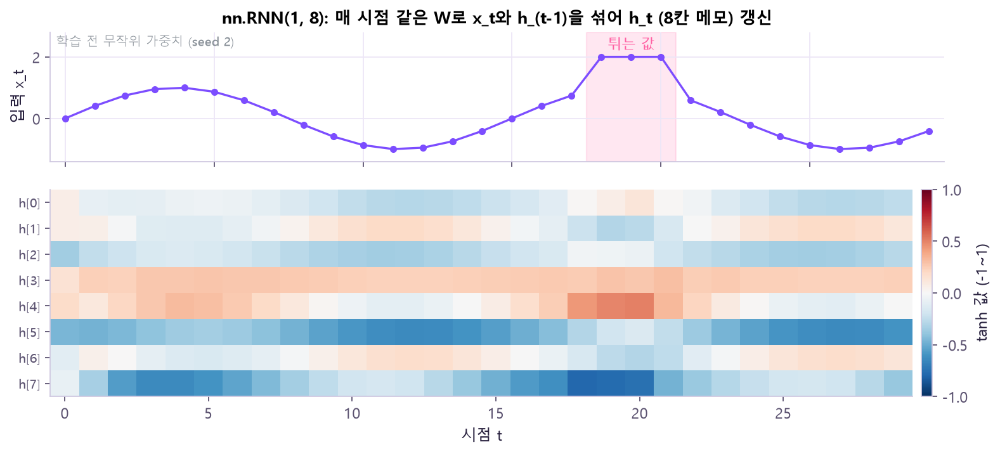
nn.RNN(1, 8)에 넣었을 때 나온 output = 시점마다의 Hidden state 8칸이에요(빨강 +, 파랑 −). 줄 하나가 메모의 한 칸이고, 가로로 시간이 흘러요. ※ 학습 전 무작위 가중치라 각 칸의 "뜻"은 아직 없어요. 🤔 무엇을 알 수 있어? ① 입력이 오르내리면 h도 같은 주기로 출렁여요 → h는 입력을 따라가는 요약이에요. ② 튀는 구간(18~20)에서 h[4]·h[7]이 크게 변했다가, 이후 몇 시점 동안 여운이 남고 서서히 원래 리듬으로 돌아와요 → 과거가 h를 통해 다음 시점으로 전달된다는 증거이자, 시간이 지나면 흐려진다는 증거예요. ③ 값이 −1~1을 넘지 않는 건 tanh 때문이에요.nn.RNN() — 순서 분류 명령어 사전에서 자세히 →self.rnn = nn.RNN(3, 8, batch_first=True) # F=3 → H=8
_, h_n = self.rnn(x) # h_n: [1, B, 8]③ LSTM — 곱하지 말고 더해서 기억을 잇는다
RNN의 문제: 역전파가 긴 시간축을 거꾸로 지나면서 같은 W를 시점마다 계속 곱해요. 1보다 작은 수를 여러 번 곱하면 0에 가까워지듯, 먼 과거에서 오는 기울기(Gradient)가 사라져요(기울기 소실). 1보다 크면 반대로 폭발해요. 게다가 앞 시점이 끝나야 다음을 계산하니 병렬화도 어려워요.
| 곱한 횟수 | 0.9¹ | 0.9¹⁰ | 0.9²⁰ | 0.9⁵⁰ |
|---|---|---|---|---|
| 값 | 0.90 | 0.35 | 0.12 | 0.005 |
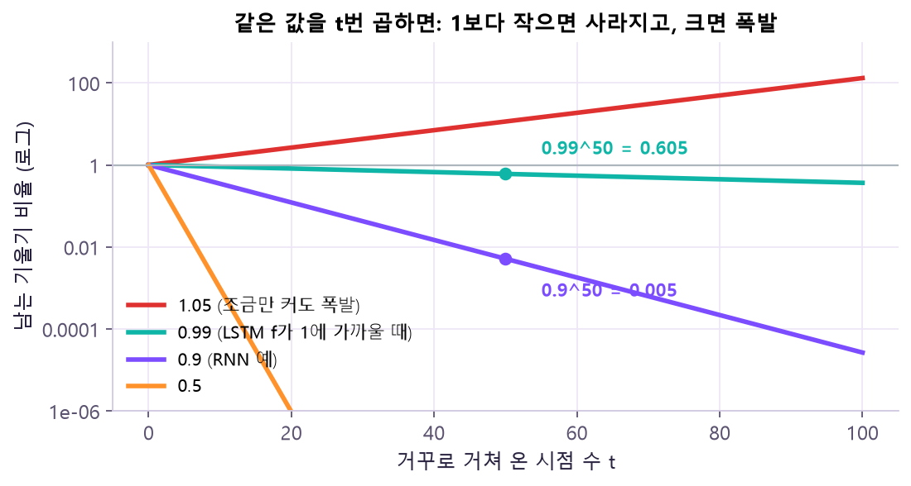
LSTM의 해결: 오래 들고 가는 기억 통로 c (Cell state)를 따로 두고, 이 통로에서는 더하기로 기억을 이어요. 얼마나 지울지·쓸지·꺼낼지는 Gate(0~1 비율)가 정하고, Gate 값도 학습한 가중치로 계산해요.
f_t : Forget gate — 이전 기억 c_(t-1)을 얼마나 남길지 (0~1)
i_t : Input gate — 새 후보 g_t를 얼마나 쓸지 (0~1)
c_t = f_t ⊙ c_(t-1) + i_t ⊙ g_t ← 남길 양 + 새로 쓸 양
o_t : Output gate — h_t = o_t ⊙ tanh(c_t) ← 지금 밖으로 꺼낼 부분
예) 이전 c 2 × forget 0.5 = 1
새 후보 0.5 × input 0.4 = 0.2
새 c = 1 + 0.2 = 1.2 (원리 설명용 숫자)| 먼 과거까지 남는 신호 | ||
|---|---|---|
| RNN (값T) | 0 | |
| LSTM c 통로 (fT) | 0 |
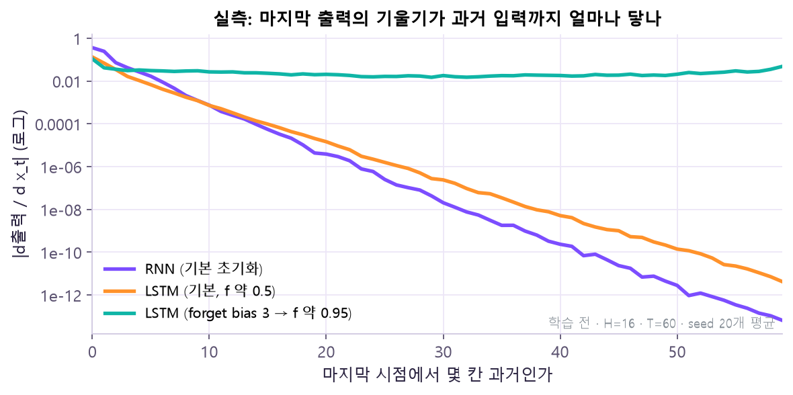
nn.RNN·nn.LSTM에서 backward()로 잰 값이에요. 마지막 시점 출력을 각 과거 입력 xt로 미분한 크기를, 거리(가로축)별로 그렸어요(세로 로그, 학습 전, seed 20개 평균). 보라 RNN과 주황 기본 LSTM은 50칸 과거에서 1e-10 수준까지 떨어지지만, forget gate bias를 3으로 줘서 f가 약 0.95가 된 초록 LSTM은 60칸 과거까지 거의 평평해요. 🤔 왜 기본 LSTM도 떨어져? 학습 전 기본 LSTM은 f가 약 0.5(sigmoid(0))라서 c 통로에서도 매번 절반씩 곱해져요. LSTM의 장점은 "구조상 f를 1 가까이 배울 수 있다"는 것 — 학습이 오래 기억할 필요를 느끼면 초록 선처럼 바뀌어요. (그래서 실전에선 forget bias를 1 이상으로 시작하는 기법도 써요.)| 상태 | 역할 | 비유 |
|---|---|---|
| c (Cell state) | 안에서만 오래 들고 가는 기억 | 서랍 속 노트 |
| h (Hidden state) | 그중 지금 필요한 부분을 꺼낸 출력 (output으로 나감) | 책상 위에 꺼낸 메모 |
nn.LSTM() — 과거 12개로 다음 1개 예측 명령어 사전에서 자세히 →self.lstm = nn.LSTM(1, 16, batch_first=True) # F=1 → H=16
output, _ = self.lstm(x) # [B, 12, 16]④ Autoencoder — 정답이 입력 자신
RNN·LSTM은 미래를 맞혀요. Autoencoder는 목적이 달라요. 입력 x를 작게 줄였다가(z) 다시 원래대로 되살리기(x̂). 긴 글을 세 줄로 요약했다가 다시 풀어 쓰는 것과 비슷해요. 오늘은 Linear 층으로 만든 MLP형이라 시간축이 없어요.
[B,8]→ Encoder
8 → 4 → 2→ z · 2
Latent [B,2]→ Decoder
2 → 4 → 8→ x̂ ≈ x
[B,8]
| 예측 (LSTM) | 재구성 (Autoencoder) | |
|---|---|---|
| 입력 → 출력 | 과거 12개 → 다음 1개 | x 8개 → x̂ 8개 |
| 정답 | 미래 값 | x 자신 |
| 지표 | 예측 MSE | 재구성 오차 |
| 가운데(Latent)가 | 결과 |
|---|---|
| 너무 넓으면 (모델이 너무 크면) | 그대로 베끼기만 함 → 배운 게 없고 일반화가 약해짐 |
| 적당히 좁으면 | 중요한 패턴만 골라 담음 |
| 너무 좁으면 | 중요한 정보까지 잃음 → Underfitting |
8 → 4 → 2 → 4 → 8)를 막대 높이 = 칸 수로 그린 모래시계예요. 가운데 검은 2칸이 Latent z. 끝에서 나온 x̂를 처음 x와 비교한 차이가 재구성 오차예요. 🤔 왜 모래시계 모양이어야 해? 가운데가 8칸이면 "그대로 복사"로 오차 0을 쉽게 만들어요. 2칸으로 조이면 8개 숫자를 2개로 요약하는 규칙을 배워야만 되살릴 수 있어요. 그 규칙이 바로 "정상 데이터의 패턴"이고, 이 패턴에서 벗어난 입력은 2칸에 잘 안 담겨서 되살리기에 실패해요.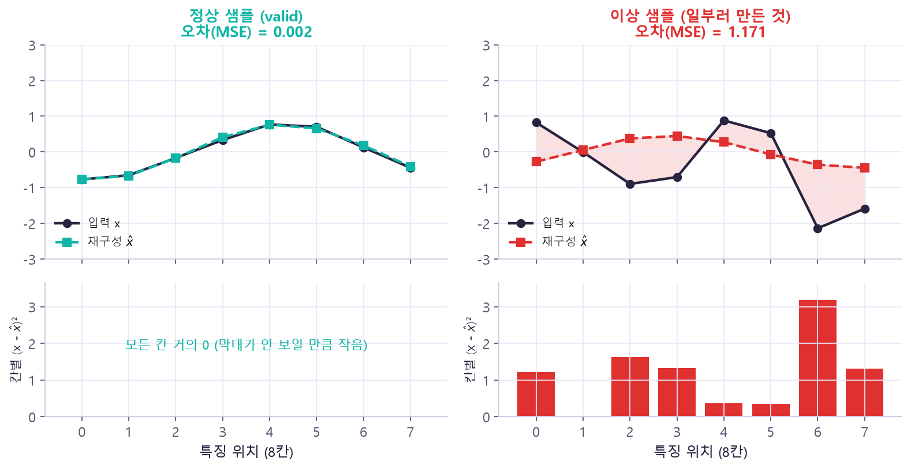
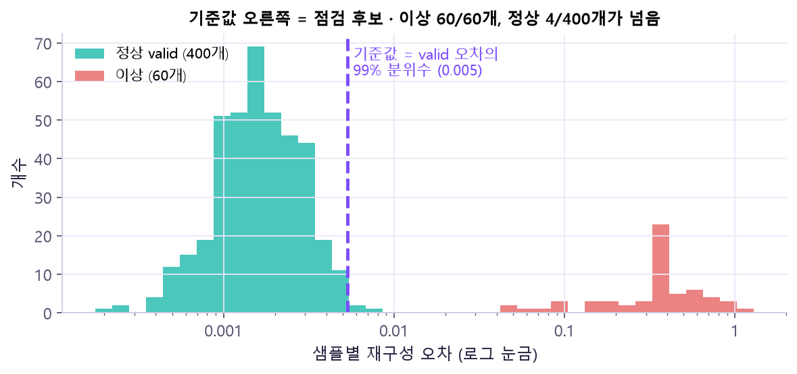
reduction="none" → mean(dim=1))를 모아 그린 분포예요(가로 로그 눈금). 초록 정상 valid는 0.001 근처에 모이고, 빨강 이상은 0.05~1로 멀리 떨어져 있어요. 보라 점선이 아래 코드의 torch.quantile(valid_err, 0.99) 기준값이에요. 🤔 왜 정상도 4개가 넘어가? "valid 오차의 99%"를 기준으로 잡으면 정의상 정상의 약 1%(400개 중 4개)는 기준을 넘어요. 기준을 높이면 놓치는 이상이, 낮추면 헛경보가 늘어요 → 몇 %로 할지는 업무가 정하고, 넘은 것은 "확정"이 아니라 "점검 후보"예요. (여기 이상 샘플은 일부러 티 나게 만든 거라 실제보다 깔끔하게 갈려요.)loss = nn.MSELoss()(recon, x) # 정답 자리에 x 자신! (Batch 평균, 학습용)
score = ((recon - x) ** 2).mean(dim=1) # 샘플별 오류 [B] (점검용)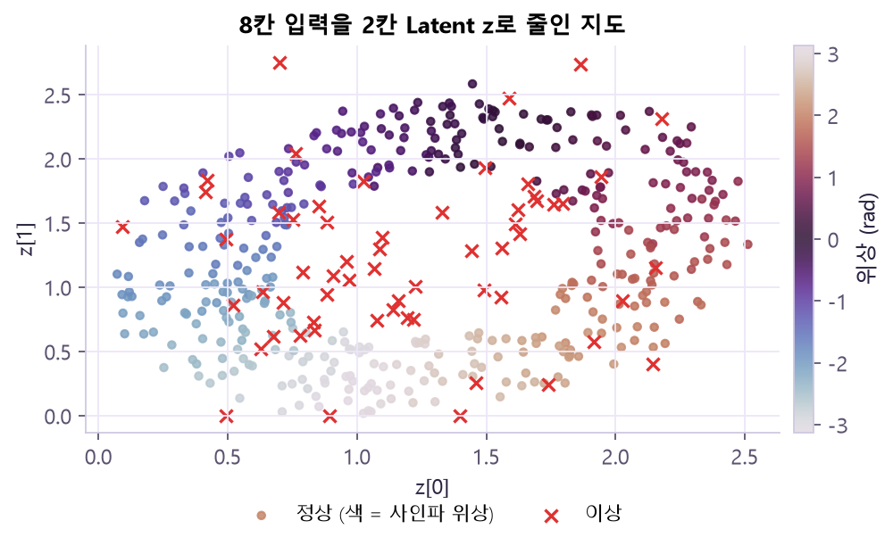
model[:4])로 뽑은 z 2칸을 좌표로 찍었어요. 정상 점들의 색(사인파 위상)이 무지개처럼 순서대로 고리를 이뤄요. 빨간 ✕(이상)는 고리 안쪽·바깥 등 아무 데나 흩어져요. 🤔 왜 고리야? 정상 데이터는 사실 "진폭·위상" 두 가지만 달라요. Autoencoder가 아무도 안 알려 줬는데 이 두 성질을 2칸에 펼쳐 담은 거예요. 다만 z[0]·z[1] 각각이 무슨 뜻인지는 정해져 있지 않아서 이렇게 그려 보며 해석해야 해요.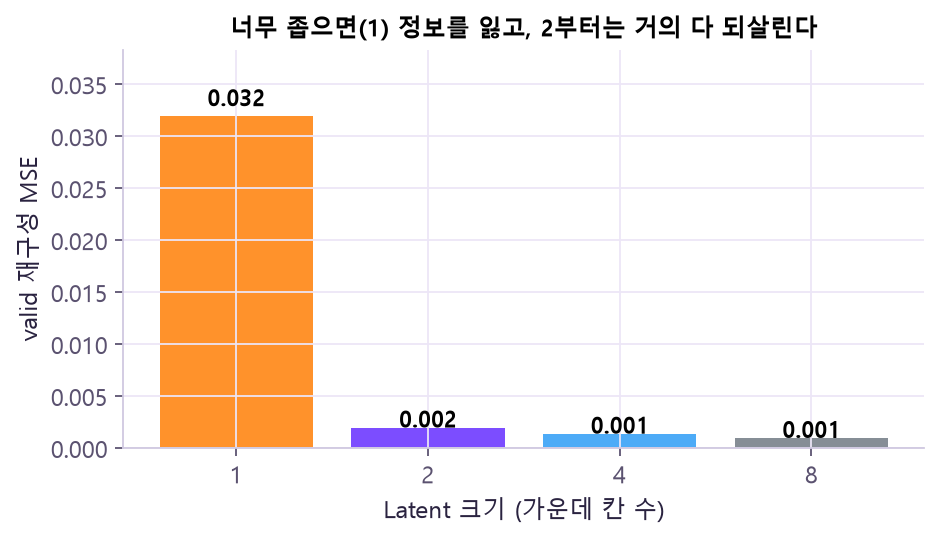
reduction="none" 명령어 사전에서 자세히 →loss_fn = nn.MSELoss(reduction="none")
error = loss_fn(recon, x).mean(dim=1) # [B, F] → [B] 샘플마다 점수 1개loader = DataLoader(TensorDataset(x_train), batch_size=32, shuffle=True)
threshold = torch.quantile(valid_err, 0.99) # 예시 규칙 — 몇 %로 할지는 업무 기준으로 정함⑤ Attention · Transformer — 필요한 위치를 직접 골라 본다
LSTM의 남은 문제: 여전히 한 시점씩 차례로 계산해서 느리고, 먼 시점 정보는 중간을 모두 거쳐 와야 해요. Attention은 순차 전달 대신 위치끼리의 관계를 한 번에 직접 가중합으로 계산해요.
| LSTM | Attention | |
|---|---|---|
| 4번 위치가 1번을 보려면 | 1 → 2 → 3 → 4 차례로 거쳐 옴 | 4가 1·2·3을 한 번에 직접 봄 |
| 계산 | 순차 (현재 상태가 이전 상태에 의존해서 나눠 돌릴 수 없음) | 병렬 (한꺼번에) — 그래서 [B, T, E] 전체를 한 번에 받음 |
Query · Key · Value
회의에 비유하면: 내 질문(Query, 찾을 정보)과 관련 있는 사람(Key, 비교할 위치)일수록 그 사람 말(Value, 합산할 내용)에 더 귀 기울여요.
weight = softmax( Q · Kᵀ / √d ) ← 어디를 얼마나 볼지 (합 = 1)
출력 = weight · V ← 그 비율대로 Value 섞기
예) weight [0.2, 0.3, 0.5], Value [10, 20, 30]
출력 = 0.2×10 + 0.3×20 + 0.5×30 = 23 (가중합 원리용 숫자)| 위치 1 (V=10) | 위치 2 (V=20) | 위치 3 (V=30) | |
|---|---|---|---|
| weight | 0 | 0 | 0 |
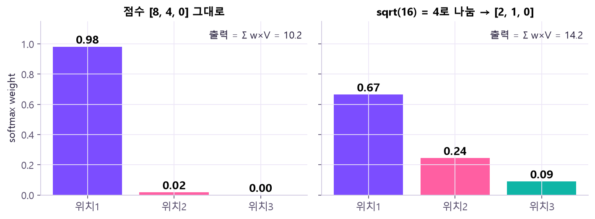
Transformer에 더 필요한 것
한 Batch 흐름: 입력 → Embedding + Position → Self-Attention → FFN·Residual·정규화 → Pooling·Head
| 재료 | 🤔 왜 필요? |
|---|---|
| Position (위치 정보) | Attention은 위치끼리 비교만 해서 순서를 몰라요. “woman ate raccoon”과 “raccoon ate woman”을 같은 단어 묶음으로 봐요. 그래서 위치마다 다른 값을 입력에 더해 순서를 알려 줘요 |
| Padding Mask | 채운 Key를 Attention에서 빼야 가짜 칸에 비율을 나눠 주지 않아요. Pooling에서도 채운 출력은 따로 빼요 |
| Causal Mask | 다음 토큰 예측에선 미래 위치를 보면 정답을 미리 보는 셈 → 미래 위치를 가려요 |
| Multi-head | Q·K·V를 여러 갈래로 투영하면 Head마다 다른 관계(가까운 위치, 같은 종류 …)를 따로 볼 수 있어요 |
| Residual (입력 + 변환 결과) | 입력을 그대로 더해 주는 지름길이 있어서 기울기가 층을 건너 바로 흘러요 → 여러 층을 쌓아도 학습이 돼요 |
| LayerNorm | 위치 하나 안의 Feature로 정규화 → 길이·Padding이 제각각이어도 OK (BatchNorm은 여러 샘플을 묶어 정규화해서 순서 데이터엔 불편) |
| 한 층 구성 | Self-Attention(위치끼리 섞기) + Feedforward(위치마다 따로 변환), 각각 뒤에 Residual + LayerNorm. 입력·출력 크기 [B, T, E]가 같아서 여러 층을 쌓아 문맥을 강화할 수 있어요 |
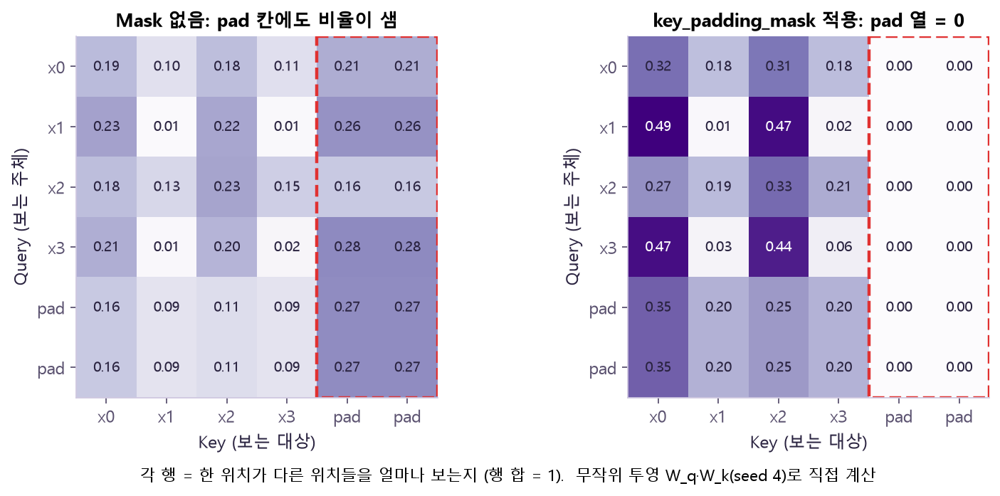
softmax(QKᵀ/√d)를 직접 계산한 Attention 가중치 표예요. 행 = 보는 주체(Query), 열 = 보이는 대상(Key), 한 행의 합 = 1. 왼쪽(Mask 없음)은 빨간 점선 안 pad 열에 행마다 0.3~0.6이나 새어 나가요. 오른쪽(key_padding_mask)은 pad 열이 전부 0.00이고 그 몫이 실제 칸으로 재분배돼요. ※ Q·K 투영은 무작위(seed 4)라 어떤 칸이 진한지에는 의미가 없어요. 🤔 왜 열만 0이고 pad 행은 남아? Mask는 "이 Key를 보지 마"라는 표시라 열을 막아요. pad 위치도 Query로서 출력은 계속 만들어지니(아래 두 줄), Pooling 때 그 출력을 따로 빼야 해요(masked_mean).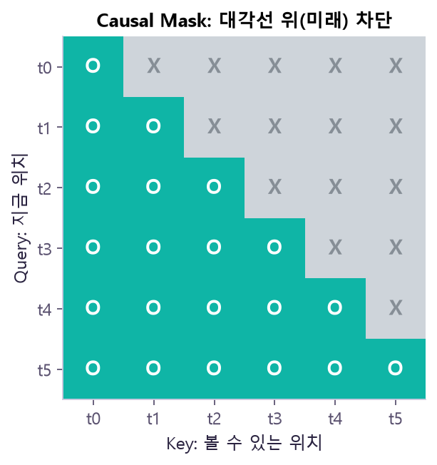
attn_mask, [T, T])예요. 행 t3을 보면 t0~t3(초록 O)만 볼 수 있고 t4·t5(회색 X)는 막혀요. 아래로 갈수록 볼 수 있는 칸이 하나씩 늘어 계단(삼각형) 모양이 돼요. 🤔 왜 삼각형? "다음 값 맞히기"에서 t3 시점의 예측이 t4를 보면 정답을 베끼는 셈이에요. "자기 자신과 과거만"이라는 규칙을 모든 행에 적용하면 대각선 위가 전부 막힌 삼각형이 돼요. Padding Mask(열 단위)와 달리 위치 쌍 단위로 막아요.nn.MultiheadAttention() — Self-Attention 명령어 사전에서 자세히 →attn = nn.MultiheadAttention(embed_dim=16, num_heads=4, batch_first=True)
output, weights = attn(x, x, x) # Self-Attention: query = key = value = xlayer = nn.TransformerEncoderLayer(d_model=16, nhead=4, dim_feedforward=32, dropout=0.1, batch_first=True)
encoder = nn.TransformerEncoder(layer, num_layers=2) # 같은 Layer를 복제해 2층self.pos = nn.Embedding(max_len, d_model) # 위치 0~63 → 16칸 벡터
z = self.encoder(x + self.pos(pos), src_key_padding_mask=padding_mask)⑥ 아키텍처 비교 — 목표·길이·자원에 맞게 고르기
점수 하나가 아니라 입력 구조와 학습 비용을 함께 비교해요.
| 항목 | RNN / LSTM | MLP형 Autoencoder | Transformer |
|---|---|---|---|
| 핵심 연결 | Hidden·Gate 반복 | Encoder–Latent–Decoder | Self-Attention |
| 주 목표 | 분류·예측 | 압축·재구성 | 문맥 분류·예측 |
| 병렬화 | 시간축 순차 | 층 내부 병렬 | 높음 |
| 길이 비용 | O(T) | 입력 차원 의존 | Attention O(T²) |
| 핵심 표현 | Hidden·Cell state | Latent z | 위치별 Embedding |
| Shape | output [B,T,H], h_n [L·D,B,H] | [B,8] → [B,2] → [B,8] | [B,T,E] → [B,T,E] → Pooling [B,E] |
| 대표 지표 | Accuracy·MSE | Reconstruction error | Accuracy·AUC·MSE |
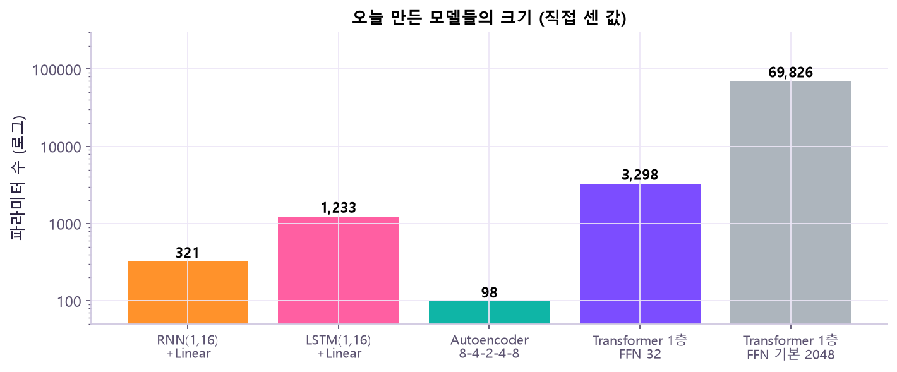
sum(p.numel())로 센 크기예요(세로 로그 눈금, 한 칸 = 10배). LSTM(1,233)은 같은 hidden 16인 RNN(321)의 약 4배, Transformer는 dim_feedforward=32면 3,298개인데 기본값 2048을 그대로 두면 69,826개로 20배 넘게 커져요. 🤔 왜 이런 차이가? LSTM은 Gate 3개 + 후보 1개로 가중치가 네 벌이고, Transformer의 FFN은 d_model × dim_feedforward × 2라 중간 크기에 정비례해요. 점수가 비슷하다면 작은 쪽이 빠르고 과적합도 덜하니, 비교표에 Params를 꼭 같이 적는 이유예요.| 비교 규칙 | 🤔 왜? |
|---|---|
| 같은 train·valid·test·Window·Feature·Target 사용 | 데이터가 다르면 점수 차이가 모델 때문인지 데이터 때문인지 알 수 없어요 |
| Epoch·Optimizer·주 지표·선택 규칙을 먼저 정함 | 결과를 보고 규칙을 고르면 원하는 모델이 이기게 맞출 수 있어요 |
| Params·Best Epoch·Valid 지표·시간·Peak Memory를 함께 기록 | 점수가 비슷하면 가볍고 빠른 쪽이 실전에선 나아요 |
| Autoencoder 재구성은 별도 표 | 목표와 단위가 다른 지표라 한 표에서 순위를 매기면 의미가 없어요 |
⑦ 길이 T · Padding · 속도 측정
| 길이 T | 16 | 32 | 64 | 128 |
|---|---|---|---|---|
| RNN·LSTM 순차 단계 | 16 | 32 | 64 | 128 |
| Attention 점수 T² | 256 | 1,024 | 4,096 | 16,384 |
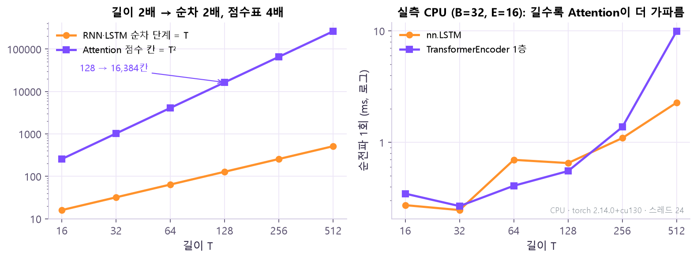
nn.LSTM과 TransformerEncoder 1층(B=32, E=16)을 실제로 잰 순전파 시간이에요. T=128 근처까지는 둘 다 1ms 아래에서 측정 잡음 속에 비슷하다가, 512에서는 Transformer가 약 10ms로 LSTM(약 2.3ms)의 4배쯤이 돼요. 🤔 왜 짧을 땐 비슷해? 짧은 길이에선 T² 표가 작아서 계산보다 함수 호출 같은 고정 비용이 시간을 차지해요. 길어질수록 T² 항이 고정 비용을 압도하면서 차이가 벌어져요. 숫자는 장치·버전마다 달라요 → 직접 재 봐야 하는 이유.torch.cuda.synchronize(x.device)
seconds = time.perf_counter() - start원본 자료
- 강의:
20261102_2.pdf(Day12 딥러닝 핵심 아키텍처 및 학습, 104쪽) · 요약:Day12_개념지도.pdf - 공식 문서: torch.nn.RNN · torch.nn.LSTM · pad_sequence · pack_padded_sequence · MultiheadAttention · TransformerEncoderLayer · Attention Is All You Need (Vaswani et al., 2017)